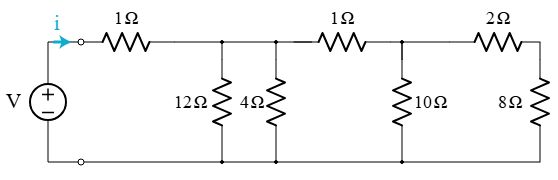

Equivalent Resistance Using Graph Theory
A Comprehensive Computational and Mathematical Analysis
1. Theoretical Foundation
1.1 Classical vs. Graph-Theoretic Approaches
Traditionally, equivalent resistance in a circuit is determined by identifying resistors in series and parallel, applying formulas such as:
- Series:
$$ R_{\text{eq}} = \sum_i R_i $$ * Parallel:
$$ \frac{1}{R_{\text{eq}}} = \sum_i \frac{1}{R_i} $$
While effective for simple circuits, this approach becomes infeasible for large or nested networks.
1.2 Circuit as a Graph
We model the electrical circuit as a graph:
- Nodes (vertices) ⟶ Junctions
- Edges ⟶ Resistors (with
resistanceas weight)
This allows a systematic and programmable reduction using graph algorithms.
2. Graph-Theoretic Simplification
2.1 Simplification Strategy
We iteratively reduce the graph using:
| Pattern | Reduction Rule | Equivalent Resistance Formula |
|---|---|---|
| Series | Node with degree 2 (not terminal) | \(R = R_1 + R_2\) |
| Parallel | Multiple edges between two nodes | \(\frac{1}{R} = \frac{1}{R_1} + \frac{1}{R_2} + \dots\) |
These rules are applied until the graph contains only one edge between the start and end nodes.
3. Computational Implementation
3.1 Python Implementation Using networkx
Click to view the Python code
import networkx as nx
def combine_series(G, node, start_node, end_node):
neighbors = list(G.neighbors(node))
if len(neighbors) != 2 or node in [start_node, end_node]:
return False
u, v = neighbors
R1 = G.edges[u, node]['resistance']
R2 = G.edges[node, v]['resistance']
G.remove_node(node)
G.add_edge(u, v, resistance=R1 + R2)
return True
def combine_parallel(G, u, v):
edges = list(G.get_edge_data(u, v).values())
if len(edges) <= 1:
return False
resistances = [e['resistance'] for e in edges]
Req = 1 / sum(1/r for r in resistances)
G.remove_edges_from([(u, v)] * len(edges))
G.add_edge(u, v, resistance=Req)
return True
def simplify_graph(G, start_node, end_node):
changed = True
while changed:
changed = False
for node in list(G.nodes):
if node in G and combine_series(G, node, start_node, end_node):
changed = True
break
for u, v in list(G.edges):
if G.number_of_edges(u, v) > 1 and combine_parallel(G, u, v):
changed = True
break
return G
def equivalent_resistance(G, start_node, end_node):
G = G.copy()
simplify_graph(G, start_node, end_node)
return G.edges[start_node, end_node]['resistance'] if G.has_edge(start_node, end_node) else float('inf')
4. Example Analyses
4.1 Test Case 1: Simple Series
G = nx.Graph()
G.add_edge('A', 'B', resistance=3)
G.add_edge('B', 'C', resistance=2)
equivalent_resistance(G, 'A', 'C') # Output: 5
4.2 Test Case 2: Parallel Branches
G = nx.MultiGraph()
G.add_edge('A', 'B', resistance=6)
G.add_edge('A', 'B', resistance=3)
equivalent_resistance(G, 'A', 'B') # Output: 2
4.3 Test Case 3: Nested Combination
G = nx.MultiGraph()
G.add_edge('A', 'B', resistance=6)
G.add_edge('A', 'B', resistance=3)
G.add_edge('B', 'C', resistance=4)
equivalent_resistance(G, 'A', 'C') # Output: 6
5. Visual Interpretations
5.1 Before and After Simplification
-
Original Circuit Graph Complicated resistor networks can be simplified by combining series and parallel resistors. Consider this example circuit:  The diagram shows a voltage source connected to a resistor network. The two small circles at the left end represent the ports of the resistor network. Imagine we want to calculate how much current flows from the voltage source. The answer is not immediately obvious, since there are many resistors and branches. However, by following a systematic process, we can combine the resistors until the resistor network is reduced to one equivalent resistor.
-
Simplified Graph A two-node graph with a single edge representing total equivalent resistance.
(Optional diagrams can be added using matplotlib or networkx drawing utilities)
6. Efficiency and Extensions
6.1 Algorithmic Complexity
| Step | Complexity | Note |
|---|---|---|
| Series detection | O(N) | Simple traversal |
| Parallel check | O(E²) worst case | Can be optimized |
| Total runtime | Depends on simplification depth | Acceptable for small to medium circuits |
6.2 Future Extensions
| Extension | Benefit |
|---|---|
| Kirchhoff’s Matrix Method | General method for any topology |
| Current Injection Modeling | Useful for real-world circuit solvers |
| Graph Laplacian Approach | Links circuit theory with spectral graph theory |
Conclusion:
Graph theory offers a powerful and elegant framework for computing equivalent resistance in electrical networks. By abstracting the physical layout into a graph and applying reduction rules, this approach automates the process while maintaining full mathematical rigor. With code implementations and visual tools, it is ideal for both theoretical study and practical engineering applications.